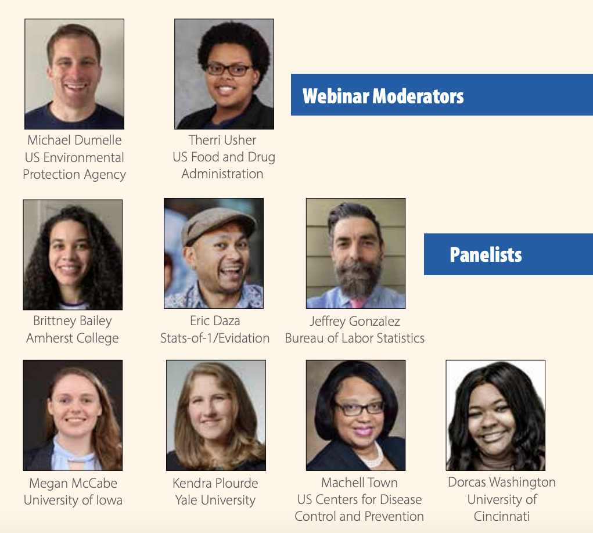
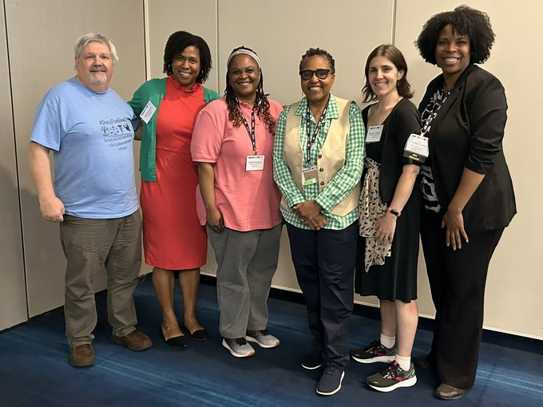
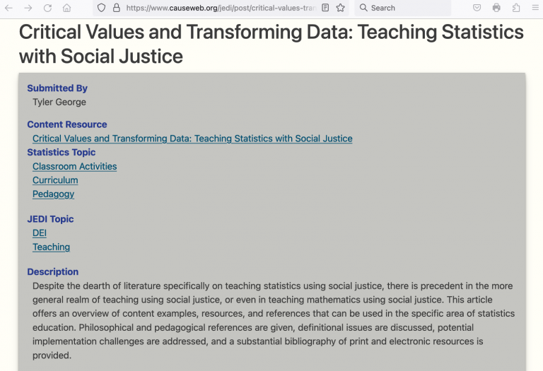
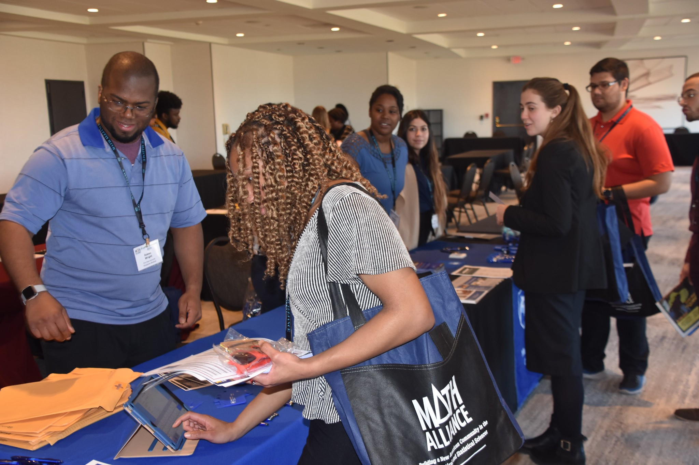
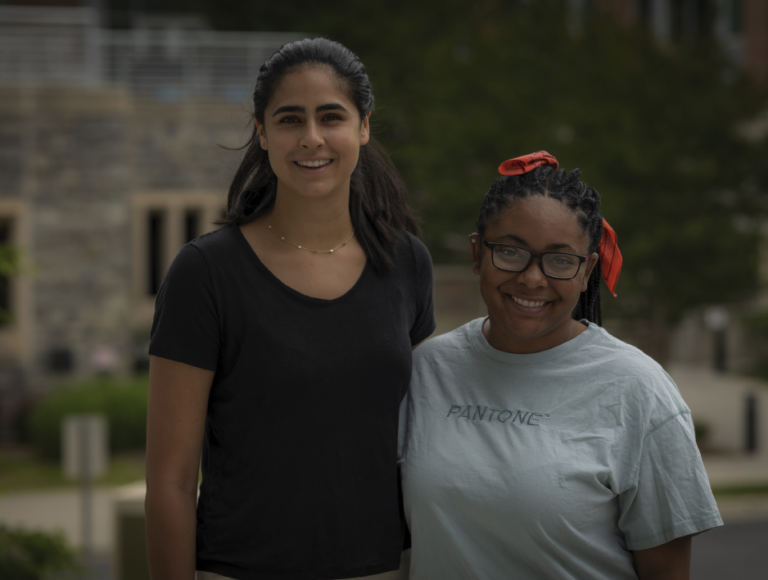
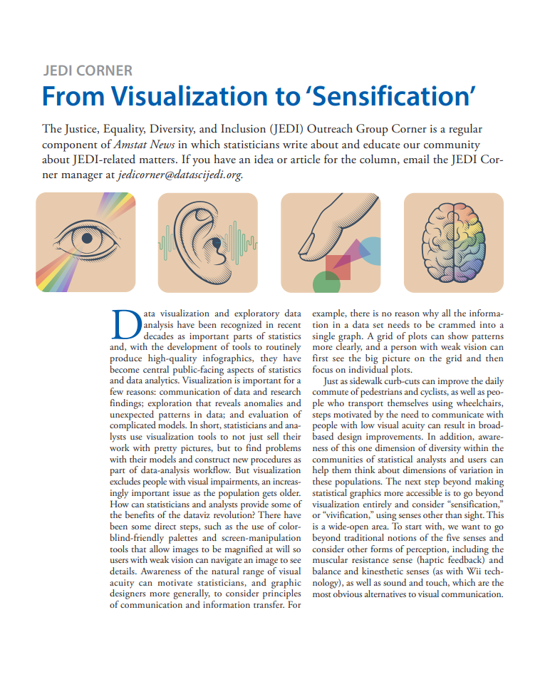
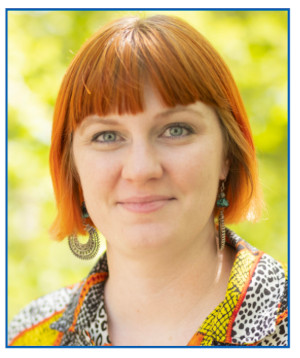
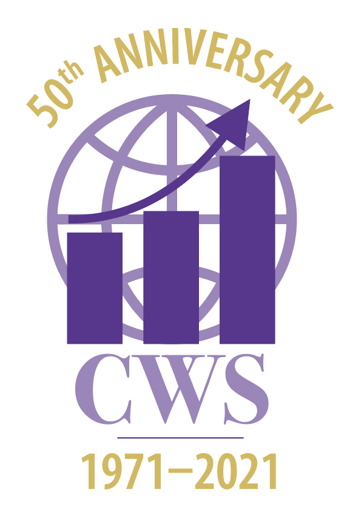

JEDI Corner
JEDI Corner is a regular component of Amstat News in which statisticians write about and educate our community on JEDI-related matters. If you have an idea or article for the column, email the JEDI Corner coordinator.
Published articles
JEDI Leaders on Leadership: A Conversation with Kimberly Sellers and Talithia Williams
, published Apr 1, 2024
The Conference on Statistical Practice in February included a panel session on data-driven leadership featuring outstanding African American female leaders in statistical science. The panel was organized and moderated by Emma Benn of the Icahn School of Medicine at Mount Sinai. Panelists included Kimberly Sellers from North Carolina State University and Talithia Williams from Harvey Mudd College. Monica Jackson from American University was also scheduled to be on the panel but was unable to attend.
, published Apr 1, 2024
The Conference on Statistical Practice in February included a panel session on data-driven leadership featuring outstanding African American female leaders in statistical science. The panel was organized and moderated by Emma Benn of the Icahn School of Medicine at Mount Sinai. Panelists included Kimberly Sellers from North Carolina State University and Talithia Williams from Harvey Mudd College. Monica Jackson from American University was also scheduled to be on the panel but was unable to attend.

Building Successful Mentor/Mentee Relationships in the Hybrid Work Era
, published Mar 1, 2024
It is no secret that many institutions are embracing remote and hybrid working environments. This change has far-reaching implications, including for how statisticians and data scientists initiate and build their careers.
, published Mar 1, 2024
It is no secret that many institutions are embracing remote and hybrid working environments. This change has far-reaching implications, including for how statisticians and data scientists initiate and build their careers.

Critical Race Theory and Statistical Analysis: What You Need to Know
, published Feb 1, 2024
Good statistical practice involves understanding the frameworks in which we obtain data, perform inference, and apply findings. One such framework, critical race theory, is widely known, widely criticized, and equally widely misunderstood. Critical race theory (CRT), is a legal and academic framework that considers the role of systematic racism in American society.
, published Feb 1, 2024
Good statistical practice involves understanding the frameworks in which we obtain data, perform inference, and apply findings. One such framework, critical race theory, is widely known, widely criticized, and equally widely misunderstood. Critical race theory (CRT), is a legal and academic framework that considers the role of systematic racism in American society.

JEDI, CAUSE Team to Offer Resources for JEDI-Informed Teaching
, published Jan 4, 2024
If you have been reading the JEDI Corner over the last few years, you know members of the JEDI Outreach Group have worked to make the group an umbrella organization for justice, equity, diversity, and inclusion (JEDI) in all things statistics and data science. Some of the original JEDI committee members are also actively involved in educational work and revitalizing their classrooms with a JEDI lens.
, published Jan 4, 2024
If you have been reading the JEDI Corner over the last few years, you know members of the JEDI Outreach Group have worked to make the group an umbrella organization for justice, equity, diversity, and inclusion (JEDI) in all things statistics and data science. Some of the original JEDI committee members are also actively involved in educational work and revitalizing their classrooms with a JEDI lens.
JSM 2023 Offers Ideas, Inspiration for 2024 Sessions
, published Dec 1, 2023
Each year, the Joint Statistical Meetings brings together the largest group of statisticians and data scientists in North America. Since the Justice, Equity, Diversity, and Inclusion Outreach Group’s establishment in 2021, JSM has also become a focus of the group’s activities. Now that the 2023 conference is a wrap, it’s time to plan for next year, when the JEDI community will once again come together to share, teach, meet old friends, and make new friends.
, published Dec 1, 2023
Each year, the Joint Statistical Meetings brings together the largest group of statisticians and data scientists in North America. Since the Justice, Equity, Diversity, and Inclusion Outreach Group’s establishment in 2021, JSM has also become a focus of the group’s activities. Now that the 2023 conference is a wrap, it’s time to plan for next year, when the JEDI community will once again come together to share, teach, meet old friends, and make new friends.
JSM Session Touches on Equity
, published Nov 1, 2023
Filter bubbles. Echo chambers. Groupthink. All things we are told to watch out for, steer clear of, or break out from. Nowadays, though, we hear less about the dangers of ‘vicious circles’—yet the dangers have not receded.
, published Nov 1, 2023
Filter bubbles. Echo chambers. Groupthink. All things we are told to watch out for, steer clear of, or break out from. Nowadays, though, we hear less about the dangers of ‘vicious circles’—yet the dangers have not receded.
WNAR Session Explores Race, Ethnicity, Ancestry in Statistics
, published Oct 1, 2023
Among statisticians, there is increased interest in applying our methodological expertise to research related to racism and race-based inequities. However, many in the field lack training or experience in conducting this research in a way that advances racial equity and justice.
, published Oct 1, 2023
Among statisticians, there is increased interest in applying our methodological expertise to research related to racism and race-based inequities. However, many in the field lack training or experience in conducting this research in a way that advances racial equity and justice.

The Math Alliance
, published Sep 1, 2023
The Math Alliance is a national mentoring community of faculty (mentors) and students (scholars) focusing on increasing traditionally excluded American minorities in the quantitative sciences professions.
, published Sep 1, 2023
The Math Alliance is a national mentoring community of faculty (mentors) and students (scholars) focusing on increasing traditionally excluded American minorities in the quantitative sciences professions.
, published Aug 1, 2023
This year’s Joint Statistical Meetings will take place August 5–10 in Toronto, Ontario, Canada. The Justice, Equity, Diversity, and Inclusion Outreach Group is sponsoring or co-sponsoring more than a dozen activities showcasing work to promote JEDI in the practice and profession of statistics.
Fund Set Up to Kick-Start Community for Underrepresented People in Statistics
, published Jul 1, 2023
I am lucky to have my dream job working in the department of statistics at the University of California, Los Angeles. My mom worked at UCLA as a librarian for 40 years; I grew up on this campus, and it has always felt like home. I love what I do, and I have a department of faculty, staff, alumni, and students who make me feel like I belong every single day. However, there’s a phrase that has come back to me many times over the last few years--This moment is not about me. Though I feel safe in my current position, I have been in other STEM environments in which I did not feel welcome for reasons completely unrelated to my intelligence or competence in the field. I felt invisible and marginalized—a second-class citizen.
, published Jul 1, 2023
I am lucky to have my dream job working in the department of statistics at the University of California, Los Angeles. My mom worked at UCLA as a librarian for 40 years; I grew up on this campus, and it has always felt like home. I love what I do, and I have a department of faculty, staff, alumni, and students who make me feel like I belong every single day. However, there’s a phrase that has come back to me many times over the last few years--This moment is not about me. Though I feel safe in my current position, I have been in other STEM environments in which I did not feel welcome for reasons completely unrelated to my intelligence or competence in the field. I felt invisible and marginalized—a second-class citizen.
Beyond the Myth of ‘Hard to Reach’: Considerations for Engaging LGBTQIA+ Communities
, published Jun 1, 2023
It is commonly believed that lesbian, gay, bisexual, transgender, queer, intersex, and asexual populations are “hard to reach” for research participation. Not so, say the three expert presenters for the ASA LGBTQ+ Advocacy Committee’s inaugural webinar, “Sociocultural and Analytical Considerations for Engaging LGBTQIA+ Communities.”
, published Jun 1, 2023
It is commonly believed that lesbian, gay, bisexual, transgender, queer, intersex, and asexual populations are “hard to reach” for research participation. Not so, say the three expert presenters for the ASA LGBTQ+ Advocacy Committee’s inaugural webinar, “Sociocultural and Analytical Considerations for Engaging LGBTQIA+ Communities.”
Student Travel Funding Needed to Impove Access to Profession
, published May 1, 2023
Broad exposure to the field, good mentorship, and a strong network are essential to career development. Early access to conferences creates opportunities for students to establish relationships and explore the field. For students with marginalized identities, a conference may be the first place they encounter other statisticians with similar identities, which could contribute to a sense of belonging in the field. However, equitable accessibility to conferences is not always available for these students. The financial cost of attending conferences is often a prohibitive factor.
, published May 1, 2023
Broad exposure to the field, good mentorship, and a strong network are essential to career development. Early access to conferences creates opportunities for students to establish relationships and explore the field. For students with marginalized identities, a conference may be the first place they encounter other statisticians with similar identities, which could contribute to a sense of belonging in the field. However, equitable accessibility to conferences is not always available for these students. The financial cost of attending conferences is often a prohibitive factor.

Biostatistics Program Gives Students Real-World Experience
, published Apr 1, 2023
The Collaborative Undergraduate Biostatistics Experience (CUBE) is gearing up for its second year at Virginia Tech this summer. CUBE exposes undergraduate STEM students, specifically those who are part of an underrepresented/minority population, to the data science and collaborative biostatistics fields.
, published Apr 1, 2023
The Collaborative Undergraduate Biostatistics Experience (CUBE) is gearing up for its second year at Virginia Tech this summer. CUBE exposes undergraduate STEM students, specifically those who are part of an underrepresented/minority population, to the data science and collaborative biostatistics fields.
 A Year in Review: JEDI Student and Young Professionals Committee
A Year in Review: JEDI Student and Young Professionals Committee, published Mar 1, 2023
The Student and Young Professionals Committee of the ASA Justice, Equity, Diversity, and Inclusion Outreach Group was established in 2022 to address the unique challenges faced by students and young professionals—those within five years of their highest terminal degree—as they navigate the statistics community. The committee provides students and other early-career folks the opportunity to build a diverse, inclusive, and respectful community to connect and share ideas with like-minded individuals as they develop their career aspirations.
Suggestions for Combining Secondary Data Analysis and Community-Based Research
, published Feb 1, 2023
We are living in an explosion of publicly available data. A huge amount of information is released in publications and publicly available surveys, updated data-sharing policies frequently require primary data to be accessible, and advancing technology facilitates more sophisticated analyses. All this data has power—power to affect all areas of policy, influence decision-makers, and, ultimately, tell people’s stories.
, published Feb 1, 2023
We are living in an explosion of publicly available data. A huge amount of information is released in publications and publicly available surveys, updated data-sharing policies frequently require primary data to be accessible, and advancing technology facilitates more sophisticated analyses. All this data has power—power to affect all areas of policy, influence decision-makers, and, ultimately, tell people’s stories.

From Visualization to 'Sensification'
, published Jan 2, 2023
Statisticians and analysts use visualization tools to not just sell their work with pretty pictures, but to find problems with their models and construct new procedures as part of data-analysis workflow. But visualization excludes people with visual impairments, an increasingly important issue as the population gets older. How can statisticians and analysts provide some of the benefits of the dataviz revolution?
, published Jan 2, 2023
Statisticians and analysts use visualization tools to not just sell their work with pretty pictures, but to find problems with their models and construct new procedures as part of data-analysis workflow. But visualization excludes people with visual impairments, an increasingly important issue as the population gets older. How can statisticians and analysts provide some of the benefits of the dataviz revolution?
Achieving Diversity in Labor Market Needs JEDI, Advocacy Groups
, published Dec 1, 2022
The Civil Rights movement, which led to the desegregation of schools and the Civil Rights Acts of 1964 and 1972, helped improve the economic status of Blacks relative to whites from the 1950s to the early 1980s. According to "Black-White Earnings Over the 1970s and 1980s, Gender Differences in Trends" in The Review of Economics and Statistics, however, socioeconomic disparities have persisted due to, in part, legal, governmental, and societal practices that systematically deny resources and opportunities to racial minorities.
, published Dec 1, 2022
The Civil Rights movement, which led to the desegregation of schools and the Civil Rights Acts of 1964 and 1972, helped improve the economic status of Blacks relative to whites from the 1950s to the early 1980s. According to "Black-White Earnings Over the 1970s and 1980s, Gender Differences in Trends" in The Review of Economics and Statistics, however, socioeconomic disparities have persisted due to, in part, legal, governmental, and societal practices that systematically deny resources and opportunities to racial minorities.
 Putting Our JEDI Values into Action: It's Past Time for a Chinese-American ASA President
Putting Our JEDI Values into Action: It's Past Time for a Chinese-American ASA President, published Nov 1, 2022
I am very proud of the ASA for its recent JEDI initiative and the Anti-Racism Task Force. Both make the association better and fairer, but they also introduce complexity. It is easy to say we oppose racism and inequity, but operationalizing such principles is not straightforward. As a specific example, I point to the fact that the ASA has never elected a statistician of Chinese descent as its president.
Finding Ada: Identifying, Engaging, and Empowering Women in Statistics and Data Science
, published Oct 1, 2022
Ada Lovelace Day falls on October 12 every year. According to the website Finding Ada, it "is an international celebration of the achievements of women in science, technology, engineering, and maths (STEM).” In terms of its purpose and outreach on and beyond Ada Lovelace Day, “it aims to increase the profile of women in STEM and, in doing so, create new role models who will encourage more girls into STEM careers and support women already working in STEM."
, published Oct 1, 2022
Ada Lovelace Day falls on October 12 every year. According to the website Finding Ada, it "is an international celebration of the achievements of women in science, technology, engineering, and maths (STEM).” In terms of its purpose and outreach on and beyond Ada Lovelace Day, “it aims to increase the profile of women in STEM and, in doing so, create new role models who will encourage more girls into STEM careers and support women already working in STEM."
Disabilities as Assets and Strengths
, published Sep 1, 2022
As stated by the US Centers for Disease Control and Prevention, “Disability impacts all of us.” More than a quarter of the US population has some type of disability, many of which are invisible (e.g., chronic illness or learning disabilities) or doubly invisible (e.g., struggles with social cues). Over the past decade, societal understanding of disability has increased. Whereas the focus used to be on limitations brought on by disability, today’s understanding and study of disability looks at the positive aspects disabled individuals add to their communities.
, published Sep 1, 2022
As stated by the US Centers for Disease Control and Prevention, “Disability impacts all of us.” More than a quarter of the US population has some type of disability, many of which are invisible (e.g., chronic illness or learning disabilities) or doubly invisible (e.g., struggles with social cues). Over the past decade, societal understanding of disability has increased. Whereas the focus used to be on limitations brought on by disability, today’s understanding and study of disability looks at the positive aspects disabled individuals add to their communities.
So Much to Do, So Little Time
, published Aug 1, 2022
By the time you read this article, the 2022 Joint Statistical Meetings in Washington, DC, will either be about to start or underway. This month’s article introduces readers to the plethora of JSM sessions and events either co-sponsored by the JEDI Outreach Group or related to JEDI initiatives.
, published Aug 1, 2022
By the time you read this article, the 2022 Joint Statistical Meetings in Washington, DC, will either be about to start or underway. This month’s article introduces readers to the plethora of JSM sessions and events either co-sponsored by the JEDI Outreach Group or related to JEDI initiatives.
Keep Your Receipts: How Early-Career Statisticians Can Navigate Conferences
, published Jul 1, 2022
A key component of advancing JEDI in our profession is ensuring that all students and young professionals have access to the knowledge and resources needed to benefit from new and perhaps unfamiliar professional activities. This month’s JEDI Corner from two student contributors offers practical advice to junior statisticians preparing for their first conference experience.
, published Jul 1, 2022
A key component of advancing JEDI in our profession is ensuring that all students and young professionals have access to the knowledge and resources needed to benefit from new and perhaps unfamiliar professional activities. This month’s JEDI Corner from two student contributors offers practical advice to junior statisticians preparing for their first conference experience.

Statistics Education and Reconsidering the Status Quo
, published Jun 1, 2022
Imagine an introductory statistics instructor is teaching students about categorical variables, maybe even discussing how to include these variables in a linear regression model. To keep her students engaged, the instructor asks the students to think about the difference between categorical and numeric variables and solicits examples. The first student to raise their hand confidently exclaims “gender!”
, published Jun 1, 2022
Imagine an introductory statistics instructor is teaching students about categorical variables, maybe even discussing how to include these variables in a linear regression model. To keep her students engaged, the instructor asks the students to think about the difference between categorical and numeric variables and solicits examples. The first student to raise their hand confidently exclaims “gender!”
Promoting Diversity in Data Repository Research
, published May 2, 2022
The National Institutes of Health is investing resources in constructing secure data repositories in which researchers and community members are able to use publicly available data. One such program is the NIH’s All of Us Research Program, which has expanded its Researcher Workbench to include data contributed by more than 329,000 participants, about 80 percent of whom are from communities that have been historically underrepresented in biomedical research.
, published May 2, 2022
The National Institutes of Health is investing resources in constructing secure data repositories in which researchers and community members are able to use publicly available data. One such program is the NIH’s All of Us Research Program, which has expanded its Researcher Workbench to include data contributed by more than 329,000 participants, about 80 percent of whom are from communities that have been historically underrepresented in biomedical research.
Infusing DEI Learning Into an Elementary Statistics Class
, published Apr 1, 2022
For many years, a small group of dedicated faculty members at Slippery Rock University, in Pennsylvania, have been lobbying for a diversity education requirement for undergraduate students. This diversity requirement would be fulfilled through completion of one of several specially designated courses to ground student learning in principles related to equity and inclusion. I joined this faculty group just as success was on the horizon, and I helped structure an online training for the faculty that would be creating and teaching the new “diversity designated” courses.
, published Apr 1, 2022
For many years, a small group of dedicated faculty members at Slippery Rock University, in Pennsylvania, have been lobbying for a diversity education requirement for undergraduate students. This diversity requirement would be fulfilled through completion of one of several specially designated courses to ground student learning in principles related to equity and inclusion. I joined this faculty group just as success was on the horizon, and I helped structure an online training for the faculty that would be creating and teaching the new “diversity designated” courses.
Increasing JEDI in Clinical Trials
, published Mar 1, 2022
Statistical practitioners in the biopharmaceutical area gather at the ASA Biopharmaceutical Section Regulatory-Industry Statistics Workshop (BIOP) every September to engage in conversations about contemporary topics of importance. Having heard the health disparities taking place in the ongoing COVID-19 pandemic and being industry statisticians ourselves, we decided to host a roundtable at this year’s conference on increasing JEDI in clinical trials—a related but wider topic.
, published Mar 1, 2022
Statistical practitioners in the biopharmaceutical area gather at the ASA Biopharmaceutical Section Regulatory-Industry Statistics Workshop (BIOP) every September to engage in conversations about contemporary topics of importance. Having heard the health disparities taking place in the ongoing COVID-19 pandemic and being industry statisticians ourselves, we decided to host a roundtable at this year’s conference on increasing JEDI in clinical trials—a related but wider topic.
Cochairs Discuss Plans for Student and Young Professionals Committee
, published Feb 1, 2022
This month, The Justice, Equity, Diversity, and Inclusion Corner is spotlighting the incoming cochairs of the Student and Young Professionals Committee—Robert Tumasian III and Lydia Gibson—and asking them a few questions about themselves and their visions for the committee in 2022.
, published Feb 1, 2022
This month, The Justice, Equity, Diversity, and Inclusion Corner is spotlighting the incoming cochairs of the Student and Young Professionals Committee—Robert Tumasian III and Lydia Gibson—and asking them a few questions about themselves and their visions for the committee in 2022.
At the Rise of JEDI: Lessons Learned from Fall of Jedi Order in Star Wars
, published Jan 1, 2022
This summer, I enjoyed the fun of watching all three Star Wars trilogies in chronological order with my nine-year-old boy. He is finally old enough to enjoy those films with me; plus, not being able to travel during the pandemic gave us time (or excuses?) to watch all the movies on nine Friday nights.
, published Jan 1, 2022
This summer, I enjoyed the fun of watching all three Star Wars trilogies in chronological order with my nine-year-old boy. He is finally old enough to enjoy those films with me; plus, not being able to travel during the pandemic gave us time (or excuses?) to watch all the movies on nine Friday nights.

Caucus for Women in Statistics Celebrates 50 Years
, published Dec 1, 2021
The Caucus for Women in Statistics (CWS) is celebrating its 50th anniversary this year. Formed in 1971 before “JEDI” became an acronym known to all, CWS has been on the forefront of giving a voice to women in statistics and offering support, mentorship, friendship, and a safe space for discussion about challenging and often difficult topics faced by women.
, published Dec 1, 2021
The Caucus for Women in Statistics (CWS) is celebrating its 50th anniversary this year. Formed in 1971 before “JEDI” became an acronym known to all, CWS has been on the forefront of giving a voice to women in statistics and offering support, mentorship, friendship, and a safe space for discussion about challenging and often difficult topics faced by women.
Statistics for Equity: Capturing, Not Masking, Intersectional Dynamics in Data
, published Nov 1, 2021
Statistics is the language of data. Just like any other language, statistics requires structure and rules for interpreting messages from data. However, statistics poses additional communications challenges, as it depends on one’s written language, which is always rife with nuances. Hence, the effectiveness of statistics for communicating concepts from data (e.g., selecting, understanding, and interpreting statistical models) also depends on one’s written language acuity.
, published Nov 1, 2021
Statistics is the language of data. Just like any other language, statistics requires structure and rules for interpreting messages from data. However, statistics poses additional communications challenges, as it depends on one’s written language, which is always rife with nuances. Hence, the effectiveness of statistics for communicating concepts from data (e.g., selecting, understanding, and interpreting statistical models) also depends on one’s written language acuity.
The JEDI Corner: How to Help Advocate for Justice, Equity, Diversity, and Inclusion
, published Oct 1, 2021
The year 2020 proved to be a watershed period in our society, given the dual epidemics of health disparities and racism. It brought many underlying issues regarding justice, equity, diversity, and inclusion to the forefront, such that people could no longer turn a blind eye to them.
, published Oct 1, 2021
The year 2020 proved to be a watershed period in our society, given the dual epidemics of health disparities and racism. It brought many underlying issues regarding justice, equity, diversity, and inclusion to the forefront, such that people could no longer turn a blind eye to them.
No matching items